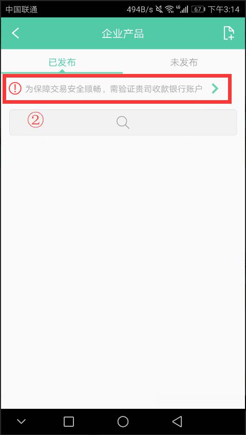

六、空间
1. 机构银行账户验证的入口在哪里？
① 企业空间：产品>银行账户验证 。
② 协会空间：资讯> 银行账户验证 。
2. 机构银行账户验证的3次是指？
① 信息提交后就生成了一个订单，无法修改，付款之后后台审核不通过还有2次机会可以修改：用户在银行账户填写信息后，提交了审核费用后，后台财务人员审核未通过时，可以重新再页面上进行第二次提交审核，总共3次机会。
3. 机构验证完银行账户后，银行账户想变更该如何操作？
① 联系客服人员重新提交银行账户，重新审核银行账户。
4. 机构员工再进行银行账户付款时，提示正在获取订单无法支付？
① 当企业员工A提交银行账户审核信息而未付款时，员工B再去进行银行账户审核时，是无法进行付款的，需要A完成付款流程。
5. 如何创建商城？
① 与平台签署开通协议>拥有主体运营企业（必须银行账户审核通过）>联系云庐后台人员开通商城服务>进入app中主体企业，点击右上角菜单栏：业务升级，开启团队协作>点击"+"按钮，创建商城。
6. 机构审核通过，在云视企业入口中搜索不到？
① 机构搜索规则：机构所属的产业角色要定制出来，机构名称包含产业角色关键字，只能在机构所属的产业角色列表搜索，在其他类型的产业列表是搜索不到的。